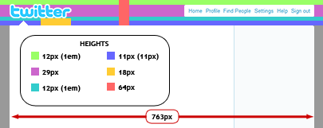
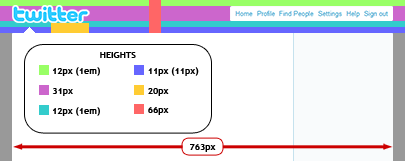
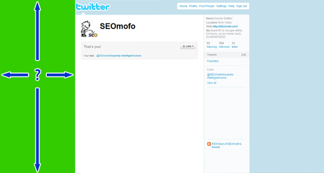
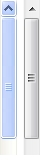
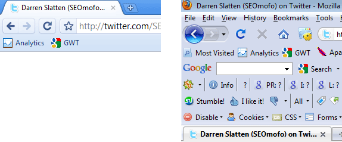
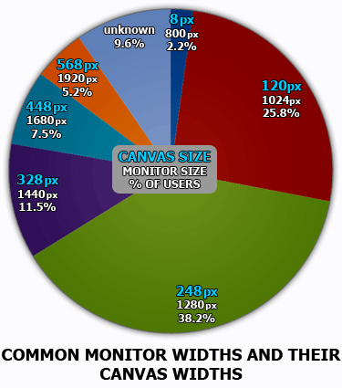
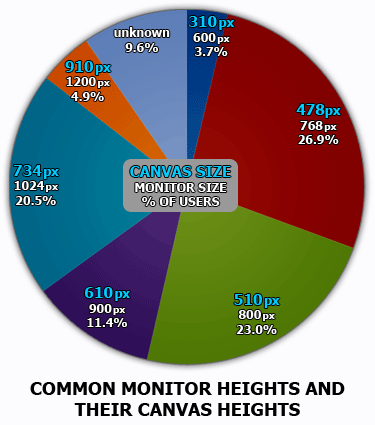
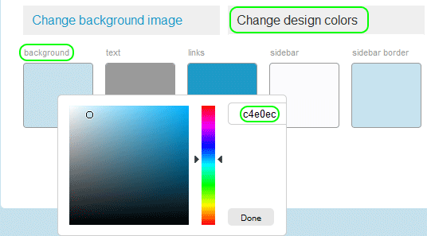
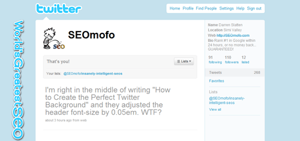

2/17/2011 NOTICE: This post was originally written for the “old Twitter” layout, so only some of this information still applies. I will probably update this tutorial when the “new Twitter” profiles become permanent.
Table of Contents
If you’re using Twitter to promote yourself or your company, then you need your profile page to make a good first impression. Twitter offers a handful of simple formatting options for customizing your profile page, and one of those is the option to use a custom background image. This article will show you how to design a Twitter background that looks great on all of the most common computer monitor resolutions, and therefore appeals to the broadest audience possible.
A well-designed background image can have a positive influence on how your brand is perceived by your customers, business contacts, and colleagues. On the other hand, a poorly-designed background image can make you seem incompetent, lazy, disorganized, or just plain stupid. The goal of this article is to establish some intelligent guidelines and best practices for creating a custom Twitter background image. Since I am a perfectionist, I will probably go into ridiculously-detailed details about why or how I determined my final guidelines. However, if you already know that I’m a genius and that everything I say is a holy gift handed down to me by Informinus (the Roman god of correct information), then you’re certainly welcome to skip to the design tips or the template. If you’re not yet convinced of my awesomeness, then put on your OCD thinking caps and follow me.
What are the Twitter page dimensions?
In order to create an optimal background image, we need to know the dimensions of the various elements in the page layout. In other words, we need to know where Twitter’s content is going to appear so we can build our image around it. We’ll start by measuring the elements whose dimensions are independent of the user’s monitor resolution. Then we’ll discuss the dimensions that DO change as the monitor resolution changes.
Static Dimensions
Some of the dimensions of the header spacing and navigation menu are defined in relative units (meaning they could increase or decrease if a user changes the default font size of their web browser), but for the sake of designing our image, we will assume that our users have not changed the default font size (1em = 12px). Here are the dimensions of the page that we can assume will never change:
CLICK IMAGE TO VIEW LARGER
{kind=link}
In the image above, I have highlighted the dimensions that might be useful to know. The image also has a chart of the heights of each color-coded section. The first measurement represents the height as it is rendered in a web browser. Some of the elements have a second measurement in parentheses–these represent the dimensions as they are actually defined in Twitter’s CSS stylesheet. For reference, here are the CSS styles from the original Twitter stylesheet (colored squares correspond to the image above):
#container {
width:763px;
margin:1em auto;
text-align:left;
position:relative;
}
#logo img {
margin-top:-2px;
position:absolute;
left:0;
}
.top-navigation>li>a {
padding:.5em .15em;
border:1px solid transparent;
font-size:1.05em;
display:inline-block;
}
body .top-navigation>li>a {
font-size:1em;
}
.content-bubble-arrow {
margin-top:1em;
padding-top:11px;
background-repeat:no-repeat;
background-position:25px 0;
background-image:url(‘/a/1259882278/images/arr2.gif’);
}
The only one that might be confusing is the purple section’s dimensions. Note that the purple section’s height is defined by more than one CSS style. Once you take the 12px font’s line-height into consideration (default = 125% = 15px), you get the purple height as the sum of:
<1px border><6px padding><15px line-height><6px padding><1px border>
Damn it! As I’m writing this, the developers at Twitter are changing their CSS file! Grrrrr. Ok, as far as I can tell, they only removed the style that defines the top nav text as font-size:1em. Since this style was overriding the one before it, deleting it brings us back to 1.05em. I don’t know which of these is going to be used long-term, so I’ll just show both. The difference is only a couple of pixels:
CLICK IMAGE TO VIEW LARGER
{kind=link}
Variable Dimensions
This is the trickiest part of designing your custom background, and it’s the area where most people fail. After you upload your new image, it will be positioned in the upper-left corner of your web browser window, and it will stay at that position regardless of the users’ monitor resolutions. However, the container element (i.e. the main page content) is centered in the browser window, so its starting position DOES change, depending on the size of the monitor. You can see this for yourself by going to Twitter.com and adjusting the size of your browser window. As you drag the side of the window to make it bigger/smaller, you should notice that the containing element readjusts so that it’s always centered. As a result, the visible portion of our background image changes as well. One of the things we need to figure out…is the relationship between a user’s monitor resolution and the size of our drawing “canvas,” shown here in green:

Canvas Width vs. Monitor Resolution
To find the width of our canvas, we start with the monitor width and subtract out any widths of browser window borders and scroll bars. This is tricky, because scroll bars have different widths, depending on the operating system…and browser borders have different widths, depending on which browser it is. So we’re going to have to make a generalization here, erring on the side of caution.
After testing all of the major browsers in Windows Vista, I found that most of them have no side borders when the window size is maximized. However, Internet Explorer and Opera both kept some type of borders, even when maximized. Of the two, Internet Explorer had the thickest borders at 2px per side. So our generalized measurement for all browsers will be 4px of total width assigned to browser borders. This generalization assumes that your visitors are using a maximized browser window. (Otherwise, they will have adjusted their browser window to an arbitrary width and height, and you can’t really plan for that.)
Scroll bars can change sizes, depending on the operating system being used. I don’t have access to many different OS’s, so I only measured the widths in Windows XP (left) and Windows Vista (right). Both came out to 17px wide. If you know of any operating systems that use scroll bars wider than 17px, let me know. Until then, our generalized measurement for all scroll bars will be 17px.
After subtracting 21 pixels from the screen resolution, we then subtract the width of the container element, which is 763px. The result equals both sides of the exposed background image, but we only care about the left side, so we divide by 2. Overall, our formula for canvas width is:
canvas width = (monitor width – 4px borders – 17px scroll bar – 763px container) / 2
Canvas Height vs. Monitor Resolution
Measuring the canvas height is not as accurate as the width was. With the width, we only had to generalize the width of the browser borders and scroll bar. These dimensions do not vary much. But the height has to take more into consideration, such as the height of all menu bars and task bars. These dimensions vary greatly, depending on the browser and the operating system. For example, compare the top of Chrome to the top of Firefox after I installed several Firefox plugins:

Since the browser choice can make such a big difference in the canvas size, the generalized measurements will be much shorter than what some users will see. We will assume that all users have a ridiculously plugin-laden Firefox installation like mine, and they are running Windows Vista. In addition to the 238px height of the top portion (shown in the comparison above), we must also take the bottom portion into consideration. Here is the Vista task bar + Firefox bottom:
Our generalized formula for canvas height would be:
canvas height = monitor height – 238px top – 52px bottom
Okay, the hard part is over. Now all we have to do is take a list of common screen resolutions and adjust the width and height, according to our formulas. The end result will be a list of canvas sizes we can expect to work with as we create our custom background image. In order to determine what the most common screen resolutions are, I sampled Google Analytics data taken from 4 different websites over a period of 6 months, from July 1, 2009 – December 1, 2009. This data represents 3.1 million total visitors, so it should be a pretty good representation of internet users in general. Below are the top 18 screen resolutions and their corresponding canvas sizes. These 2 graphs are the same data, but one is sorted by popularity and the other is sorted by screen resolution:
SORTED BY MOST POPULAR
| MONITOR SIZE |
CANVAS SIZE |
USAGE |
|---|---|---|
| 1024×768 | 120×478 | 23.0% |
| 1280×800 | 248×510 | 21.0% |
| 1280×1024 | 248×734 | 11.1% |
| 1440×900 | 328×610 | 10.0% |
| 1680×1050 | 448×760 | 7.5% |
| 1920×1200 | 568×910 | 4.0% |
| 800×600 | 8×310 | 2.2% |
| 1366×768 | 291×478 | 2.2% |
| 1152×864 | 184×574 | 2.0% |
| 1280×768 | 248×478 | 1.7% |
| 1920×1080 | 568×790 | 1.2% |
| 320×396 | 0×106 | 1.0% |
| 1600×1200 | 408×910 | 0.9% |
| 1024×600 | 120×310 | 0.8% |
| 1280×960 | 248×670 | 0.8% |
| 1280×720 | 248×430 | 0.7% |
| 1400×1050 | 308×760 | 0.7% |
| 1600×900 | 408×610 | 0.6% |
SORTED BY SMALLEST RESOLUTION
| MONITOR SIZE |
CANVAS SIZE |
USAGE |
|---|---|---|
| 320×396 | 0×106 | 1.0% |
| 800×600 | 8×310 | 2.2% |
| 1024×600 | 120×310 | 0.8% |
| 1024×768 | 120×478 | 23.0% |
| 1152×864 | 184×574 | 2.0% |
| 1280×1024 | 248×734 | 11.1% |
| 1280×720 | 248×430 | 0.7% |
| 1280×768 | 248×478 | 1.7% |
| 1280×800 | 248×510 | 21.0% |
| 1280×960 | 248×670 | 0.8% |
| 1366×768 | 291×478 | 2.2% |
| 1400×1050 | 308×760 | 0.7% |
| 1440×900 | 328×610 | 10.0% |
| 1600×1200 | 408×910 | 0.9% |
| 1600×900 | 408×610 | 0.6% |
| 1680×1050 | 448×760 | 7.5% |
| 1920×1080 | 568×790 | 1.2% |
| 1920×1200 | 568×910 | 4.0% |
Many of these screen resolutions have similar widths, so I compressed the top 18 screen resolutions into the top 6 screen widths. The majority of the poorly-designed backgrounds I’ve seen contain information or graphics that are too wide. Look at the following graph…you should notice that more than a quarter of internet users are using screens that are 1024 pixels wide. This means your background image needs to display all your contact information and important graphics within the leftmost 120 pixels–otherwise a quarter of your viewers won’t be able to read it!

I haven’t seen nearly as many backgrounds exceeding the canvas height, but I’ll show the chart anyway. The data in this chart suggests that you keep your important information within the topmost 478 pixels.

More Screen Resolution Statistics
The following table contains popular screen size data provided by W3Cschools.com. They also have web browser stats that you might find useful or interesting.
W3Cschools.com Users
January 2010
| Display Resolution |
% of Total Users |
|---|---|
| 1024×768 | 20.0 |
| 1280×1024 | 18.2 |
| 1280×800 | 17.3 |
| 1440×900 | 10.5 |
| 1680×1050 | 10.0 |
| Other > 1024×768 | 4.8 |
| 1920×1200 | 4.6 |
| 1366×768 | 3.6 |
| Unknown | 3.0 |
| 1920×1080 | 2.3 |
| 1152×864 | 2.1 |
| 1600×1200 | 1.4 |
| 1280×768 | 1.2 |
| 800×600 | 1.0 |
| 640×480 | 0.0 |
What are the Twitter background image dimensions?
Many people fail to realize that the viewable portion of a Twitter background image changes, depending on the dimensions of the viewer’s monitor. In other words, there are no one-size-fits-all measurements. However, Twitter does impose a limit on the width of any images you upload, and it will automatically scale your image down to 2048px wide. The height is not limited, but it will change proportionately to the width, if Twitter has to scale your image down to meet the 2048 pixel cutoff.
Recommended Background Image Dimensions
Width: 1920 pixels
Height: 1200 pixels
Maximum Background Image Dimensions
Width: 2048 pixels
Height: no limit
Fitting your important information within your visitors’ viewable background is only half the battle. The other half is making sure your image completely fills the background on your viewers’ screens. There are 2 ways to accomplish this.
Make it Big
The simplest way to make sure your background image is big enough…is to make it as big as the biggest monitors you can reasonably expect your visitors to use. In my opinion, the minimum size you should use is 1920×1200 (this size is used by more than 5% of users). This will cover the vast majority of your visitors’ screens. If your image is relatively simple (i.e. increasing the dimensions by a lot only increases the file size by a little), then you might consider going up to 2048×1600, which is the maximum width that Twitter allows, coupled with the height of a 30″ monitor.
Blend the Edges
The second way to make sure your image is big enough…is to use an image that terminates in a solid color at the edges, and set that color as your background-color. To change your background color, you click Settings → Design.

If I were designing a background image to use with the color #C4E0EC, it might look something like this:
And adding it to my #C4E0EC background would be seamless:

If you already have an image, but you don’t know how to match the background color to it…you can use the Firefox plugin called Colorzilla, which lets you click on anything in your browser and it tells you the color code for that pixel. It’s basically like the eyedropper tool in Paint, Photoshop, Illustrator, etc., but it works in your browser.
Tips for Designing Your Own Twitter Background
1. If your custom background image displays important information like your business name, website, email address, etc., then it should be no wider than the leftmost 120 pixels. Any wider than this and your information will be unreadable to about 25% of your visitors (using monitors that are 1024px wide).
2. The viewable height of your background image depends on which web browser your visitors are using, how many plugins they’ve installed in it, and which operating system they’re using (i.e. the height of the task bar). A conservative estimate of your usable background would be the topmost 478 pixels.
3. The space between the document window and the top of the main container element (i.e., the space where the Twitter logo and top navigation are located) is 66 pixels tall. If your background image displays contact information in the top 66 pixels, then visitors using 800×600 monitors (only about 2-3% of users) will see the Twitter logo on top of that information. If you wish to avoid this, display your information below the top 66px.
4. To make sure your background image fills your visitors’ entire screens, you have two options. You can blend your image into a solid color around the edges and set your Twitter profile’s background-color to match it. Or you can make your background big enough to cover the highest resolutions available on the consumer market. If you choose the latter, your background image should be at least 1920×1200.
Custom Twitter Background Image Template
The images below are guides to help you with the design of your custom Twitter background. The one on the left is the recommended 1920×1200 resolution, and the one on the right is the XL resolution of 2048×1600. The XL version is not very practical, but I’ve included it for the sake of completeness. The colored boxes represent the canvas sizes as they are viewed in each of the top 6 most common screen sizes, and the XL version also contains the yellow area, which represents the viewable dimensions of the 2560×1600 pixel monitors. The images are also annotated with helpful tips that explain each section of the layout. You can copy an image and paste it into your image editing program, and then build your own background image over it.
{kind=link}
{kind=link}